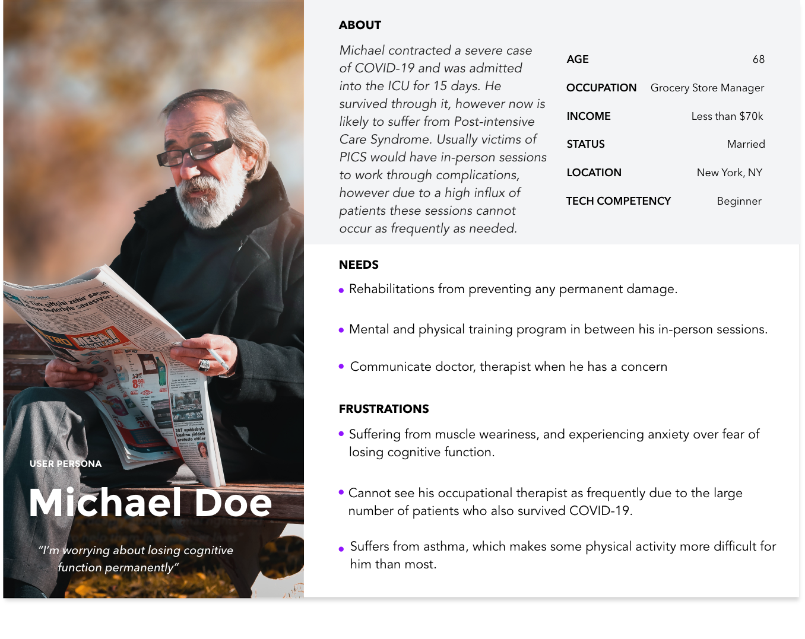
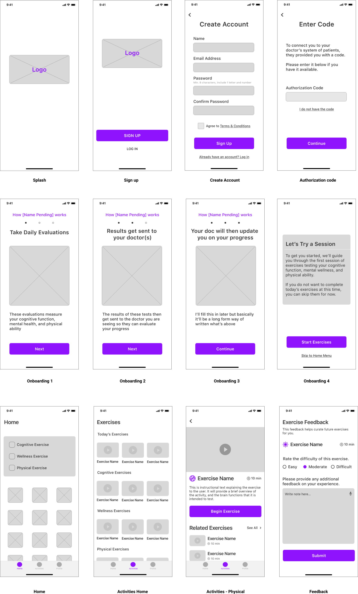
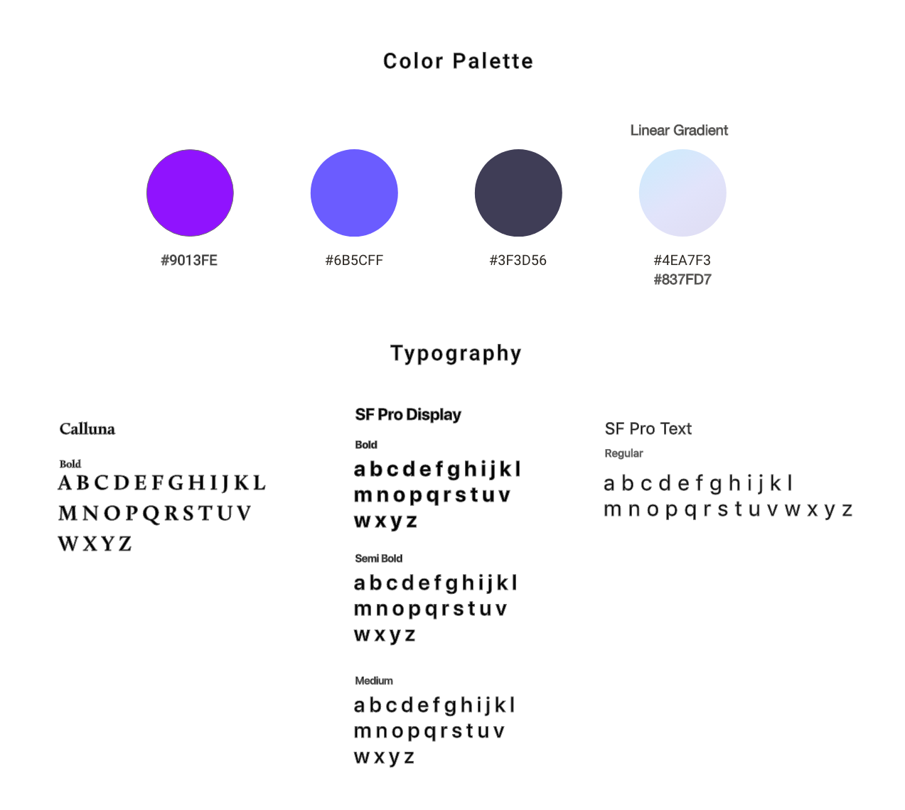
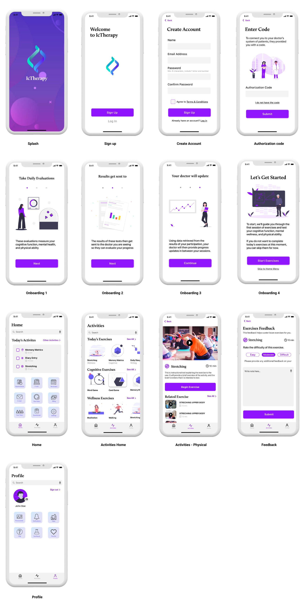

COVID Recovery App
This project was a 4 weeks design challenge for Remote Design Jam hosted by San Francisco User Experience Designers (UXD) group. The prompt was an COVID-19 related problem. Each team decided on a problem space and solved it with design. Our team decided to create a mobile app that assists the recovery process and prevent any consequential damage for Post Intensive Care Syndrome patients from COVID-19.

YEAR
2020, 4 weeks
ROLE
UX/UI
TEAM
Seiko(self), Ryan Flynn(UX/UI), Nicole Hill (UX/UI), Jerrod Timmons(presenter)
TOOLS
Sketch
Challenge
Many survivors of severe COVID-19 cases are likely to suffer from Post-intensive Care Syndrome, which cause loss in cognitive function (up to 75% of ICU survivors) and mental health issues in the form of depression, anxiety, and PTSD (up to 62% of ICU survivors).
Occupational therapists and mental health professionals will be overwhelmed by the increase in patients as a result of the pandemic which will possibly cause less attention for individuals who are recovering.
Solution
Create an app that curates daily exercises for the patient each day that evaluates their performance. The results are sent to the physician and that allows the physician to monitor the patient’s progress.
This app will
- conducts daily checks with ICU survivors to assess their cognitive ability, mental wellness, and physical strength
- curates different mental exercises and content that will aid in their recovery
- not meant to replace in-person sessions, but rather supplement the progress in between
- alleviates some of the workload of the caretaker involved in assessing their loved one’s condition
Due to our time constraints, unfortunateåly we are unable to conduct user research.
Research
To identify the users, we decided to research the demographic of severe COVID-19 patients and found this report.
According to a recent New York Times report, of hospitalized COVID-19 patients...
- 74.5% are 50 years old or older
- 54.4% are male
- 89.3% have an underlying medical condition such as hypertension, a chronic lung disease (e.g. asthma), or chronic metabolic disease (e.g. diabetes)
User Persona
We created a user persona to express and focus on the major needs and expectations of the user.
Wireframe
In our research of Post-Intensive Care Syndrome, key factors are cognitive function, mental wellness, and physical ability. We set the main feature to be those 3 categories of exercise. The app is connected with the physician's system so the exercise evaluation will be sent to the doctor.
Style Guide
Key Features
Data synchronized between doctor and patient
Authorization code provided by the doctor is required for first time signup. This code synchronizes between the doctor’s client management system and a client's app. This simple step enables the client's progress to be updated regularly for the doctor.
Guiding the feature of the application
Onboarding screens will appear when a user signs up for the first time to demonstrate the benefits and value that the user will get. In addition, they are educating the user how to use this app.
Activity feedback send to doctor
The feedback screen will show up after each activity. The user will mark the difficulty of the activity and provide notes for the physician if they have any concerns. This feedback helps curate activity for individual patients, and thus will synchronize patient's records that doctor owns.
Simple navigation
“Home”, “Activities” and “Profile” of the main navigation are located at the bottom of the screen and all the pages are able to accessed from there. Home is hub of all the pages, Activities is hub of activities and Profile is personal data. Daily activities are key to the recovery process so we decided Activities should be on the main navigation menu.
Mockup
This is the final design of the application. We aimed the design to be friendly and approachable but still have a clinical feel.
